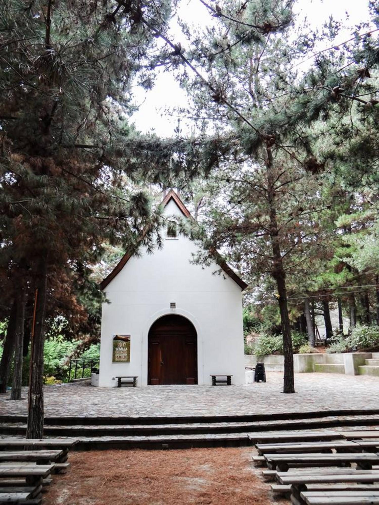
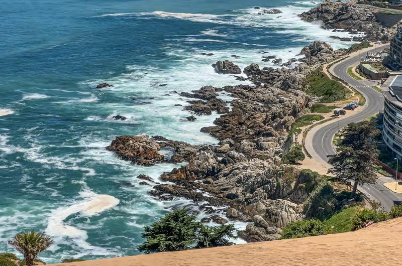
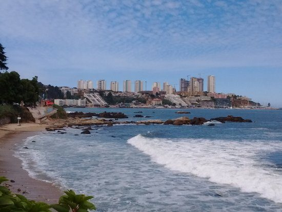
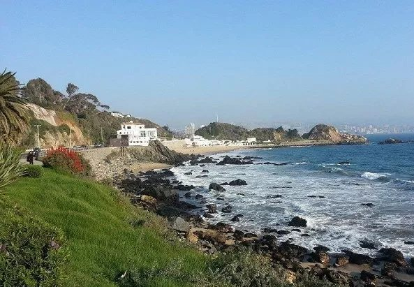
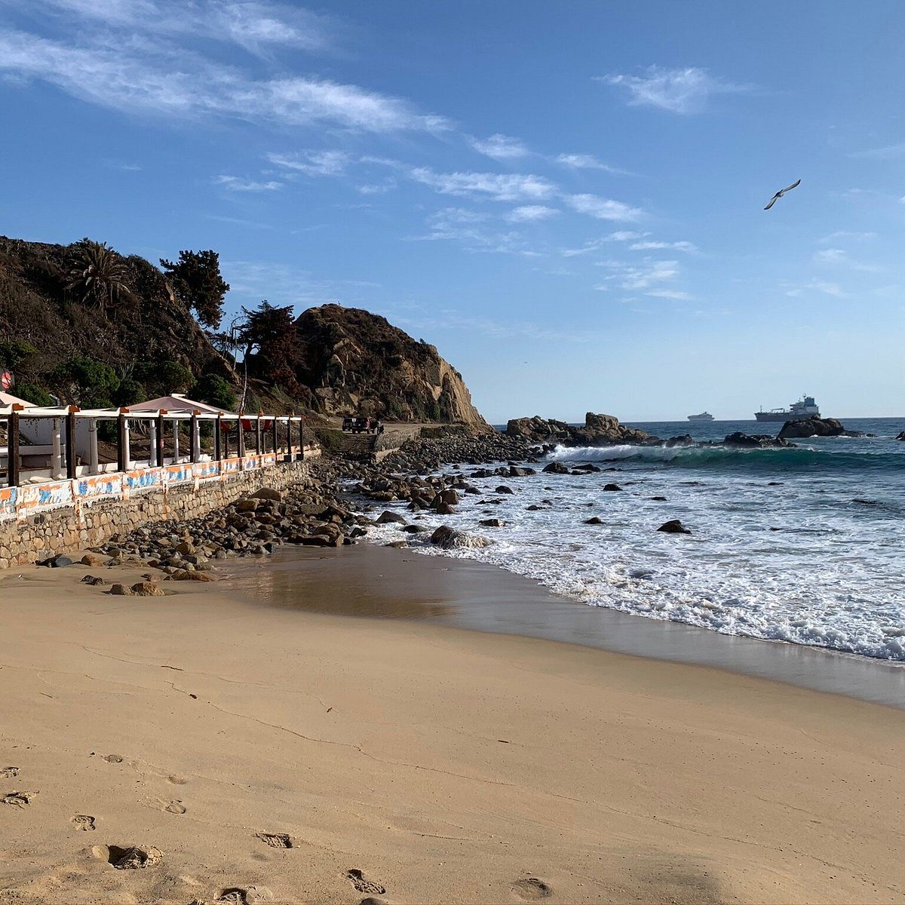

12:30
Misa en Los Pinos y de ahí vemos
Como los dos vamos igual, salimos juntos de ahí. Buscamos dónde almorzar, conversamos con calma y te dejo a tiempo para tu clase de las 17:10.

Hola, Ro
Tengo un par de ideas dando vueltas para juntarnos.
Te las dejo acá abajo.
Viernes

12:30
Como los dos vamos igual, salimos juntos de ahí. Buscamos dónde almorzar, conversamos con calma y te dejo a tiempo para tu clase de las 17:10.
Sábado
Los dos son lo mismo en el fondo: caminar y conversar. Partiríamos tipo 8:30 o 9:00.


8:30 – 9:00
Caminar y conversar con la costa al lado todo el rato. Ese tramo es de los más bonitos por acá y da para ir sin apuro.


8:30 – 9:00
Lo mismo: caminar y conversar, pero para el otro lado. La vez pasada fuimos hacia Reñaca, así que ahora bajamos hasta el balneario Las Salinas.
¿Cuál te gusta más?